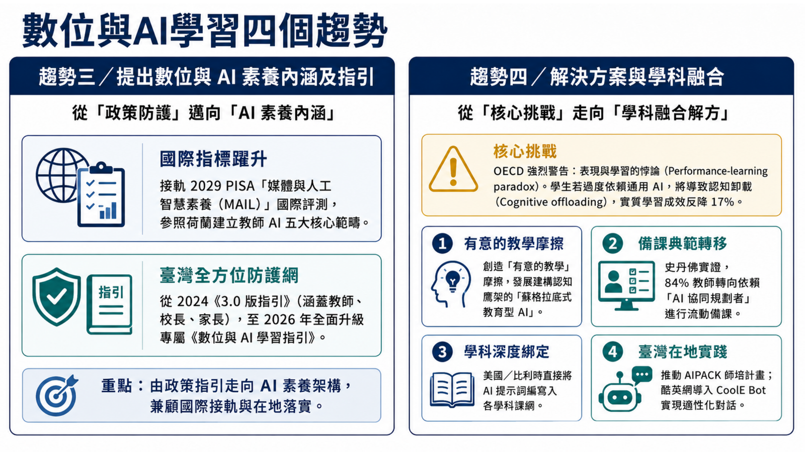
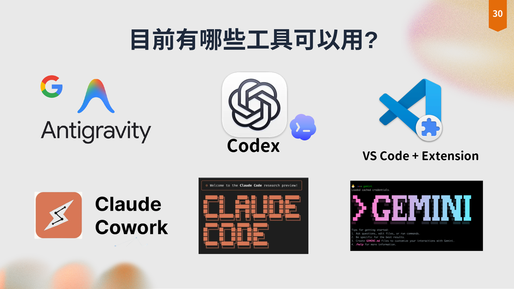
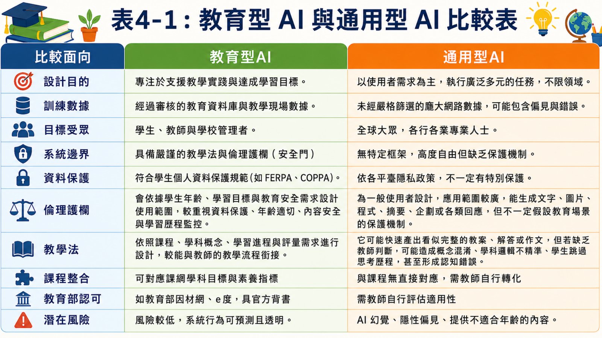
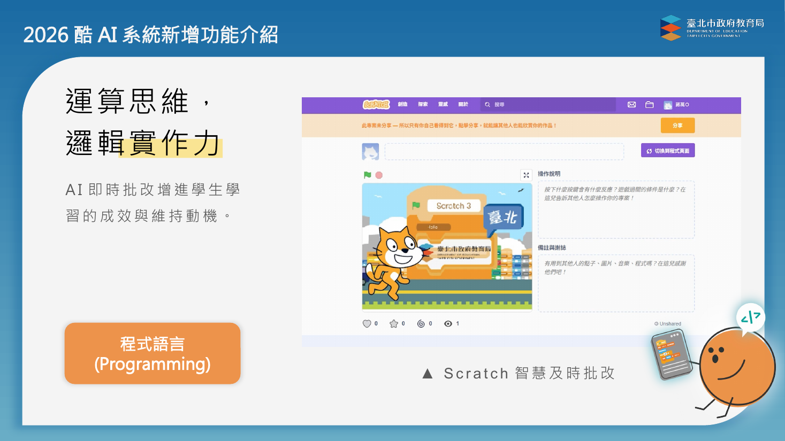
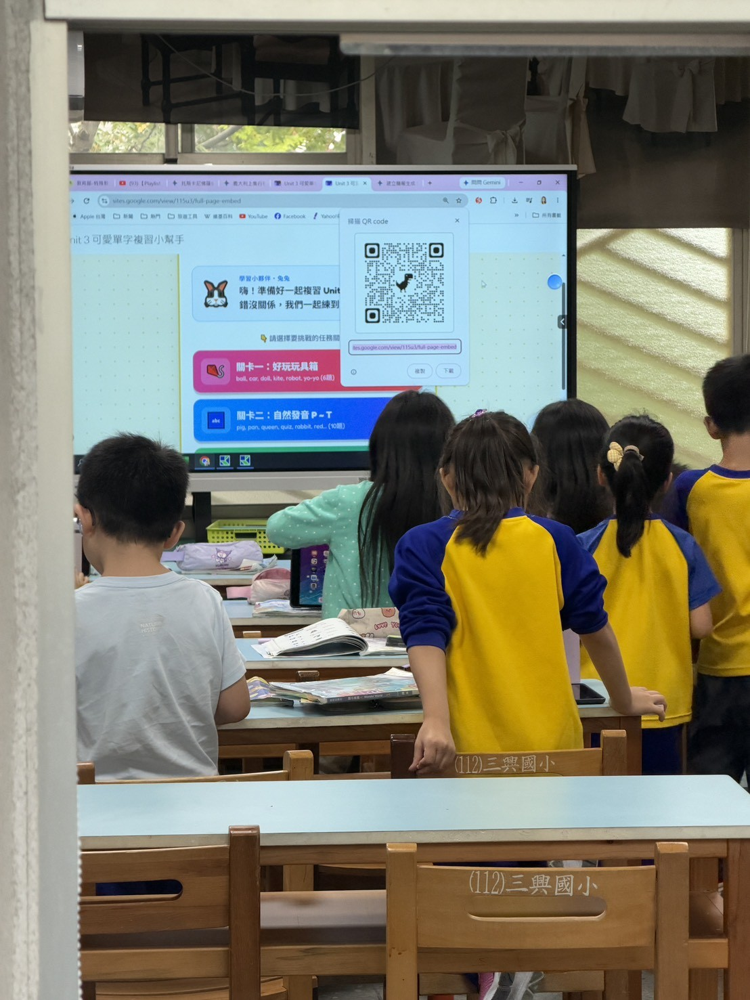

把指引帶進
臺北教室
教育部推薦名單上，有臺北

指引 p.67：優先選用教育部建置或推薦的數位學習平臺
A2 數位學習平臺推薦名單：臺北酷課雲（115.10.16 起）
和因材網、酷英並列
酷AI 就是酷課雲裡的 AI 學習系統
資料來源｜pads.moe.edu.tw/teacher_list.php（2026-11-21 截圖）
酷AI：已經在教室裡的 AI
人次使用
2026-01 跨縣市記者會公布的累計數字
簽 MOU 共享
連江、雲林、澎湖
到校研習
339 場、17,844 人次（2023-10～2026-04）
指引裡的臺北

趨勢四：臺灣在地實踐
公版寫：酷英網導入 CoolE Bot，實現適性化對話
酷英是臺北市建置、全國使用的英語平臺
臺北還有酷AI：各學科、個人化學習路徑
講趨勢時，舉老師看得到、明天就能用的例子
資料來源｜模組一公版簡報 p.16
酷AI：從統一進度，走向個人化路徑

資料來源｜《2026 酷AI 系統新增功能介紹》（2026-01-26 記者會）
七大風險
這張照片，你會轉傳嗎？
- S 看來源誰發的？原始出處在哪？
- T 看時間什麼時候的事？
- E 看證據有其他媒體、官方證實嗎？
- P 看觀點不同來源怎麼說？
答案：AI 生成（Midjourney，2023-03），當時在網路瘋傳
資料來源｜圖：Wikimedia Commons〈Pope Francis in puffy winter jacket〉，Public domain
5 秒，就能偷走你的聲音
5 秒音檔就能「偷走你的聲音」
美中接連爆發 AI 變聲詐騙，以「親友出事」開場，催你在查證前匯款
看原文 ↗深偽能即時模仿親屬的聲音與影像
生成式 AI 把詐騙改造成近乎全自動的攻擊
看原文 ↗課堂最簡單的一招：跟家人約好一個「暗號」
律師相信 AI，罰 5,000 美元
律師用 ChatGPT，書狀出現不存在的警察證人
美國新墨西哥州謀殺案上訴，律師被裁藐視法庭、罰 5,000 美元並移送懲戒
看原文 ↗AI 假判例全球追查
ChatGPT 問世以來，全球已記錄超過 500 起法律文件引用 AI 虛構內容
看原文 ↗F 找出可疑 → A 追問依據 → C 查證比對 → T 修正轉化
用 AI 寫完，自己卻記不得
Your Brain on ChatGPT
54 人寫作實驗：用 AI 組的腦部連結最弱，也最難引用自己剛寫的句子
看原文 ↗Digital Education Outlook 2026
有通用 AI 時作業品質較好；拿掉 AI 考試，優勢消失甚至反轉
看原文 ↗T 先試試 → H 只要提示 → I 自己說明 → N 換題再做 → K 確認自己懂
工程師把原始碼貼給 ChatGPT
三星員工把機密輸入 ChatGPT
20 天內 3 起：程式原始碼、設備量測資料、會議紀錄
看原文 ↗三星禁止員工使用生成式 AI
資料存在外部伺服器，難以取回或刪除
看原文 ↗臺北的做法：用單一身分驗證登入酷AI，學生不必另外註冊商用帳號
陪伴型 AI，禁止未成年開放聊天
14 歲少年與聊天機器人對話後輕生，母親提告
訴狀指控平臺設計刻意讓使用者產生情感依附
看原文 ↗Character.AI 與 Google 和解多起訴訟
2025-10 起，未滿 18 歲不能再和角色開放式聊天
看原文 ↗C 覺察情緒 → A 知道 AI 沒有真感情 → R 找真人求助 → E 回到真實互動
公版列的工具，我每天都在用

公版 p.30：Codex、Claude Code、Claude Cowork、Gemini CLI……
中心的實例：用 AI Agent 批次產製酷AI 課程包
全市 250 校報表：一套參數化範本 × 每校資料
風險同一套：工具安全、內容安全、學生身心安全
資料來源｜模組二公版簡報 p.30
教育型 AI

教育型 AI 的特徵，酷AI 怎麼對？
| 表 4-1 的特徵 | 通用型 AI | 酷AI |
|---|---|---|
| 設計目的 | 使用者要什麼就做什麼 | 對應課綱單元的學習活動 |
| 登入與資料 | 個人帳號、各平臺年齡限制 | 臺北市單一身分驗證 |
| 教師角色 | 老師看不到過程 | 老師開課、看作答結果與課後分析 |
| 教育部 | 需學校自行評估 | 酷課雲列入 A2 推薦名單 |
學生自學 → 老師看數據 → 精準推薦


資料來源｜《2026 酷AI 系統新增功能介紹》
程式、臺語、英語口說



資料來源｜《2026 酷AI 系統新增功能介紹》
上午的問題：誰付得起 AI？
愛沙尼亞 AI Leap
2025-09 起，政府提供高中生與教師免費的 ChatGPT Edu
首年約 2 萬名學生
臺北酷AI
全市師生用單一身分驗證就能用
2026-01 與連江、雲林、澎湖簽 MOU 共享
數位平權：不是每位老師自己付費，而是公共平臺讓每個孩子都用得到
隔天，英文老師自己做了 App

2026-11-18 三興國小 2 小時 AI 研習
隔天：英文老師做出單字複習 App，放上 Google Sites
課堂上：平板個人練習＋大屏全班複習
數位科技不是目的，是讓老師明天就能用
資料來源｜三興國小教務主任 2026-11-19 提供